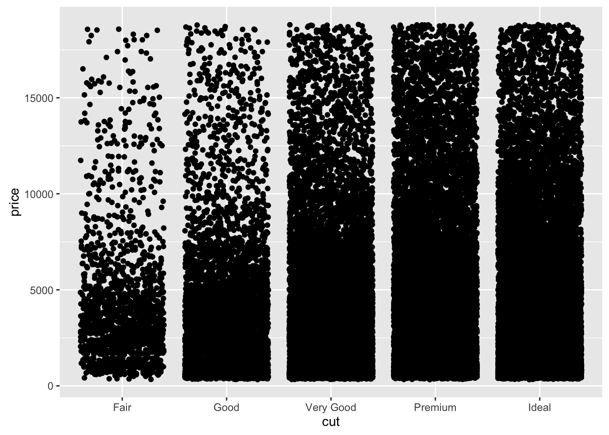
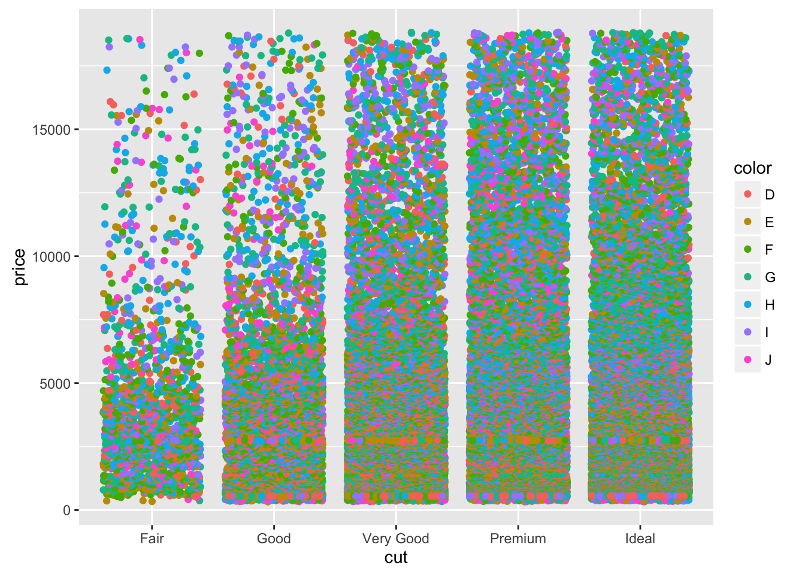
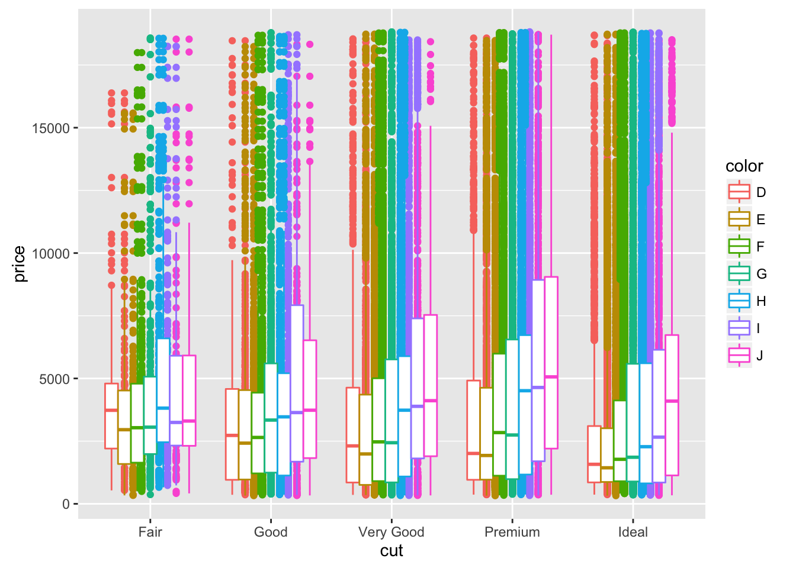
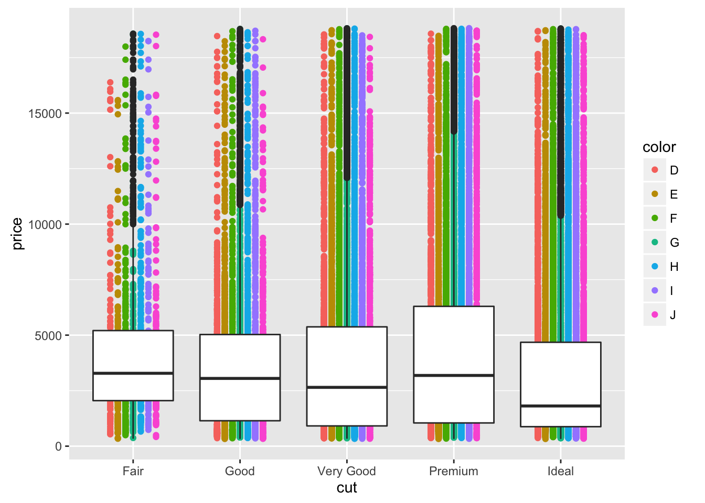
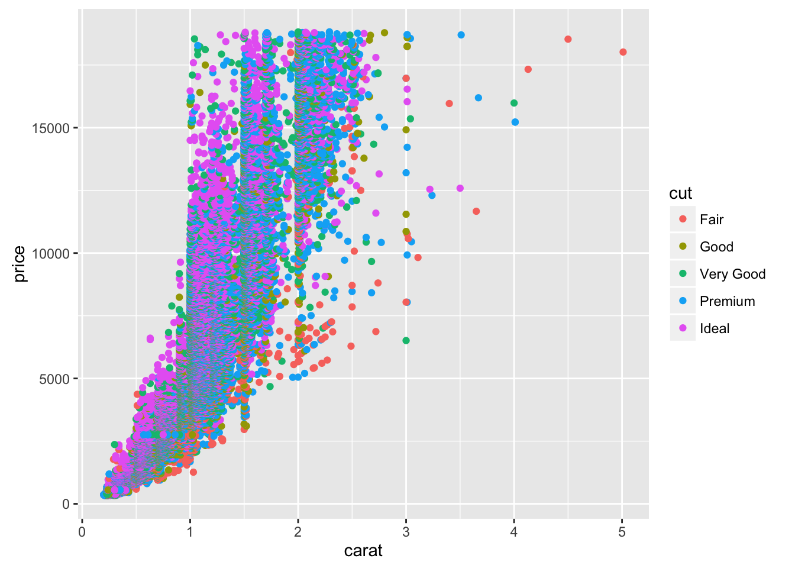
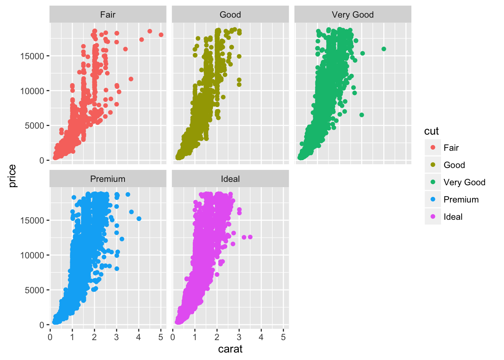
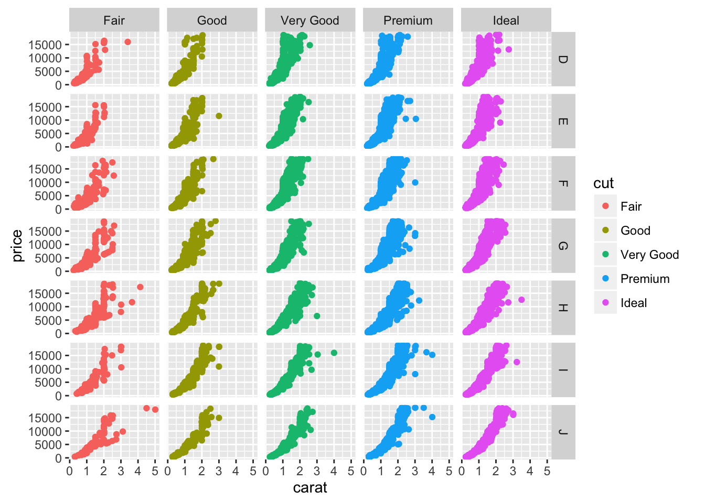

6 Using Factors to Subset Data and Plots
6.1 About this chapter
- Questions:
- How can I make plots that compare multiple categories?"
- Objectives:
- Understand factors
- Understand colouring and faceting on factors
- Use factors for summaries and plot design
- Keypoints:
- A factor is a value of a categorical variable, or the different values a label can take
- Factors are needed to subset and add attributes to data dynamically
6.2 Factors
In previous plots we’ve been using categories, specifically the Species category to split our data, colour our plots etc. These categorical columns are called Factors in R. Looking at the diamonds data set we can see how this is set up in R.
head(diamonds)## # A tibble: 6 × 10
## carat cut color clarity depth table price x y z
## <dbl> <ord> <ord> <ord> <dbl> <dbl> <int> <dbl> <dbl> <dbl>
## 1 0.23 Ideal E SI2 61.5 55 326 3.95 3.98 2.43
## 2 0.21 Premium E SI1 59.8 61 326 3.89 3.84 2.31
## 3 0.23 Good E VS1 56.9 65 327 4.05 4.07 2.31
## 4 0.29 Premium I VS2 62.4 58 334 4.20 4.23 2.63
## 5 0.31 Good J SI2 63.3 58 335 4.34 4.35 2.75
## 6 0.24 Very Good J VVS2 62.8 57 336 3.94 3.96 2.48Here we can see the cut, color and clarity columns are all non-numeric, textual data. These are the factor variables of this dataset. We can confirm that by asking for the class of the column, that is, the type of data in it. We use the dataset $ column name syntax for this.
class(diamonds$color)## [1] "ordered" "factor"class(diamonds$depth)## [1] "numeric"We can also ask for all the different values of the factor, in R called the levels
levels(diamonds$color)## [1] "D" "E" "F" "G" "H" "I" "J"levels(diamonds$cut)## [1] "Fair" "Good" "Very Good" "Premium" "Ideal"6.3 Colouring by factors
Let’s look at applying mappings by a factor. Let’s look at how price varies by cut.
p <- ggplot(diamonds) + aes(cut,price)
p + geom_jitter()
Now let’s throw a second variable in there, lets see how color varies within each cut. We do this by creating a new aesthetic mapping within the geom_jitter()
p + geom_jitter(aes(colour=color))
The spots are all overlapping, we can force the different colours to stay separate with the position option. We use position_dodge() to make them dodge each other. The width option tells the spots how far to stay apart.
p + geom_jitter(aes(colour=color), position=position_dodge(width=0.5) )
We can also throw other geoms on top in the same way. EG Boxplots for each cut and colour
p + geom_jitter(aes(colour=color), position=position_dodge(width=0.5) ) + geom_boxplot( aes(colour=color), position=position_dodge() )
Remember layers/geoms are independent, so can be set up to show individual aspects of the data. Let’s have a boxplot for the whole of the cut, irrespective of the colour.
p + geom_jitter(aes(colour=color),position=position_dodge(width=0.5)) + geom_boxplot() 
And of course, the whole thing still works even if we are comparing two numerical columns. We can still use the aesthetic mapping in the geom to colour our points by a factor
ggplot(diamonds) + aes(carat, price) + geom_point(aes(colour=cut))
6.4 Small multiple plots
Sometimes, trying to squeeze a lot of data into one plot isn’t the clearest way to show it. Instead small multiple plots (different data, same settings) can be used. In ggplot, this is called faceting and is done with the facet_wrap() or facet_grid() function. We use the factors to define the facet. Let’s add faceting to the previous plot
p <- ggplot(diamonds) + aes(carat, price)
p + geom_point(aes(colour=cut)) + facet_wrap( ~ cut)
Here we see the plot is divided into panels, one for each ‘cut’. The facet_wrap() function puts all the panels into a single row, but wll wrap that row as space demands. The syntax is a bit odd, we used the ~ operator to mean ‘varies by’ , even though we only used one variable. It’s just a quirk of ggplot.
The facet_grid() function forces a grid structure and can take more than one factor. Now the ~ ‘varies by’ syntax makes more sense:
p + geom_point(aes(colour=cut)) + facet_grid(color ~ cut)
6.5 Summary Statistics
Factors are powerful things for helping us to quickly get summary statistics, and not just plots out of the data. We already saw how to generate summary statistics on a whole dataset using the summary() function.
summary(iris)## Sepal.Length Sepal.Width Petal.Length Petal.Width
## Min. :4.300 Min. :2.000 Min. :1.000 Min. :0.100
## 1st Qu.:5.100 1st Qu.:2.800 1st Qu.:1.600 1st Qu.:0.300
## Median :5.800 Median :3.000 Median :4.350 Median :1.300
## Mean :5.843 Mean :3.057 Mean :3.758 Mean :1.199
## 3rd Qu.:6.400 3rd Qu.:3.300 3rd Qu.:5.100 3rd Qu.:1.800
## Max. :7.900 Max. :4.400 Max. :6.900 Max. :2.500
## Species
## setosa :50
## versicolor:50
## virginica :50
##
##
## But a better way to summarise by factor is with the describeBy() function in the psych package. Note you need to use $ notation to describe the column with the factor you want to subset with.
library(psych)
describeBy(iris, iris$Species)## $setosa
## vars n mean sd median trimmed mad min max range skew
## Sepal.Length 1 50 5.01 0.35 5.0 5.00 0.30 4.3 5.8 1.5 0.11
## Sepal.Width 2 50 3.43 0.38 3.4 3.42 0.37 2.3 4.4 2.1 0.04
## Petal.Length 3 50 1.46 0.17 1.5 1.46 0.15 1.0 1.9 0.9 0.10
## Petal.Width 4 50 0.25 0.11 0.2 0.24 0.00 0.1 0.6 0.5 1.18
## Species* 5 50 1.00 0.00 1.0 1.00 0.00 1.0 1.0 0.0 NaN
## kurtosis se
## Sepal.Length -0.45 0.05
## Sepal.Width 0.60 0.05
## Petal.Length 0.65 0.02
## Petal.Width 1.26 0.01
## Species* NaN 0.00
##
## $versicolor
## vars n mean sd median trimmed mad min max range skew
## Sepal.Length 1 50 5.94 0.52 5.90 5.94 0.52 4.9 7.0 2.1 0.10
## Sepal.Width 2 50 2.77 0.31 2.80 2.78 0.30 2.0 3.4 1.4 -0.34
## Petal.Length 3 50 4.26 0.47 4.35 4.29 0.52 3.0 5.1 2.1 -0.57
## Petal.Width 4 50 1.33 0.20 1.30 1.32 0.22 1.0 1.8 0.8 -0.03
## Species* 5 50 2.00 0.00 2.00 2.00 0.00 2.0 2.0 0.0 NaN
## kurtosis se
## Sepal.Length -0.69 0.07
## Sepal.Width -0.55 0.04
## Petal.Length -0.19 0.07
## Petal.Width -0.59 0.03
## Species* NaN 0.00
##
## $virginica
## vars n mean sd median trimmed mad min max range skew
## Sepal.Length 1 50 6.59 0.64 6.50 6.57 0.59 4.9 7.9 3.0 0.11
## Sepal.Width 2 50 2.97 0.32 3.00 2.96 0.30 2.2 3.8 1.6 0.34
## Petal.Length 3 50 5.55 0.55 5.55 5.51 0.67 4.5 6.9 2.4 0.52
## Petal.Width 4 50 2.03 0.27 2.00 2.03 0.30 1.4 2.5 1.1 -0.12
## Species* 5 50 3.00 0.00 3.00 3.00 0.00 3.0 3.0 0.0 NaN
## kurtosis se
## Sepal.Length -0.20 0.09
## Sepal.Width 0.38 0.05
## Petal.Length -0.37 0.08
## Petal.Width -0.75 0.04
## Species* NaN 0.00
##
## attr(,"call")
## by.data.frame(data = x, INDICES = group, FUN = describe, type = type)With this you can get a nice, comprehensive table of summary statistics across all the numerical columns, divided by the chosen factor.
For combinations of factors, you can use the ddply() function in the plyr package. Here you can choose a list of factors to summarise, but you must name the output columns and the R function to use. Helpfully the R function for a mean is mean() and the function for standard deviation is sd().
Here, we divide up on cut and colour using the make-a-list function c(), we tell ddply we want to summarise and that it should add a mean column using the mean() function and an sd column using the sd(function)
library(plyr)
ddply(diamonds, c('cut', 'color'), summarise, mean=mean(price), sd=sd(price) )## cut color mean sd
## 1 Fair D 4291.061 3286.114
## 2 Fair E 3682.312 2976.652
## 3 Fair F 3827.003 3223.303
## 4 Fair G 4239.255 3609.644
## 5 Fair H 5135.683 3886.482
## 6 Fair I 4685.446 3730.271
## 7 Fair J 4975.655 4050.459
## 8 Good D 3405.382 3175.149
## 9 Good E 3423.644 3330.702
## 10 Good F 3495.750 3202.411
## 11 Good G 4123.482 3702.505
## 12 Good H 4276.255 4020.660
## 13 Good I 5078.533 4631.702
## 14 Good J 4574.173 3707.791
## 15 Very Good D 3470.467 3523.753
## 16 Very Good E 3214.652 3408.024
## 17 Very Good F 3778.820 3786.124
## 18 Very Good G 3872.754 3861.375
## 19 Very Good H 4535.390 4185.798
## 20 Very Good I 5255.880 4687.105
## 21 Very Good J 5103.513 4135.653
## 22 Premium D 3631.293 3711.634
## 23 Premium E 3538.914 3794.987
## 24 Premium F 4324.890 4012.023
## 25 Premium G 4500.742 4356.571
## 26 Premium H 5216.707 4466.190
## 27 Premium I 5946.181 5053.746
## 28 Premium J 6294.592 4788.937
## 29 Ideal D 2629.095 3001.070
## 30 Ideal E 2597.550 2956.007
## 31 Ideal F 3374.939 3766.635
## 32 Ideal G 3720.706 4006.262
## 33 Ideal H 3889.335 4013.375
## 34 Ideal I 4451.970 4505.150
## 35 Ideal J 4918.186 4476.2076.6 Quiz
The built in dataset CO2 describes measurement of CO2 uptake versus concentration for Quebec and Mississippi grasses in chilled and nonchilled tests. The dataset is as follows:
Typeis a factor column with two levelsQuebecandMississippiTreatmentis a factor colum with two levelsnonchilledandchilledUptakeis a numerical colum with CO2 uptake rate in micromoles per metre squared per secondPlantis a factor with twelve levels, one for each individual plant assayed.
- Create a plot with
geom_point()that shows the Plant on the x-axis and the Uptake on the y-axis. Colour the points by ‘Type’ andfacet_wrap()byTreatmentto get a subplot for chilled and nonchilled.